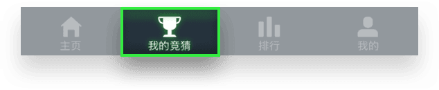

<ion-modal-view class='ksbz-model'>
	<div class="hallmodelbox blackbg position-center">
		<div class="closeb" ng-click="firstBlackMod.remove()"></div>
		<div class="hallmodelbody">
			
			<p class="guideText a-font-size-small a-text-color-whit a-font-family-special">你加入或创建的房间，可以在<span class="font-weight a-text-color-light">“我的竞猜”</span><br />
				中查看。并且在竞猜开始后，可以查看自己的<br />
				<span class="font-weight a-text-color-light">实时排名</span>。
			</p>
			<div class="searchbtn a-flex-center a-buttonSmall-green" ng-click="firstBlackMod.remove()">确定</div>
		</div>
	</div>
</ion-modal-view>